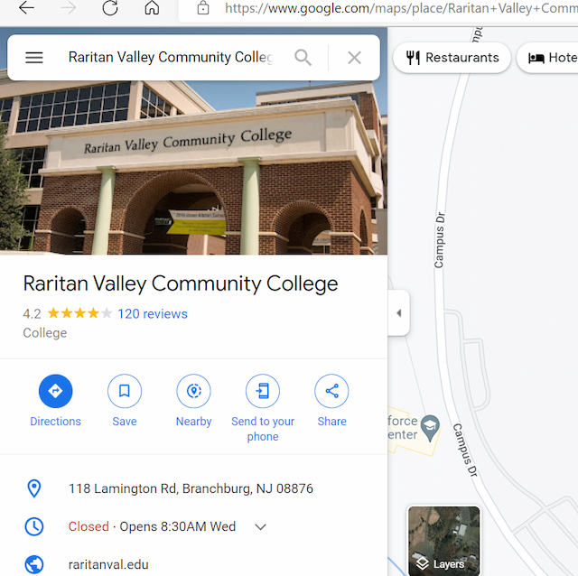
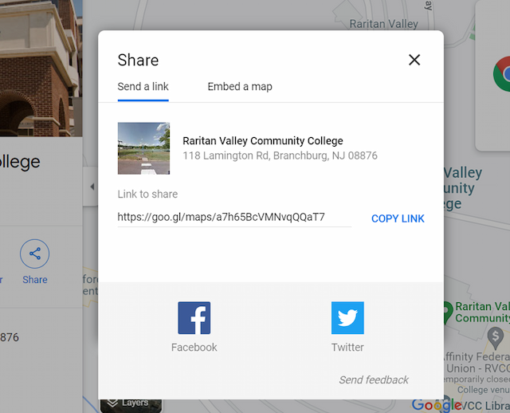
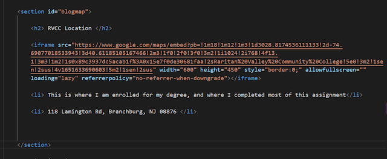
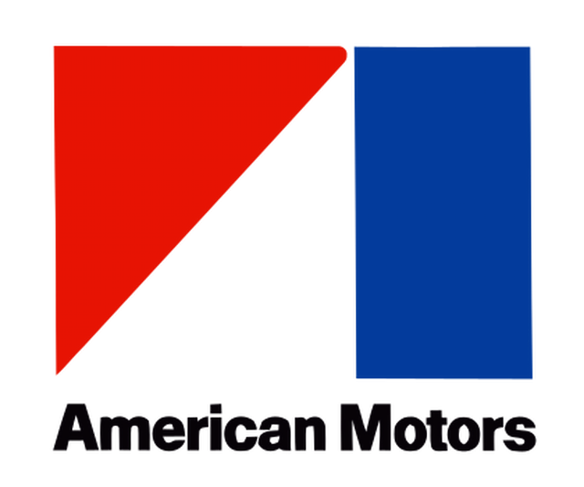
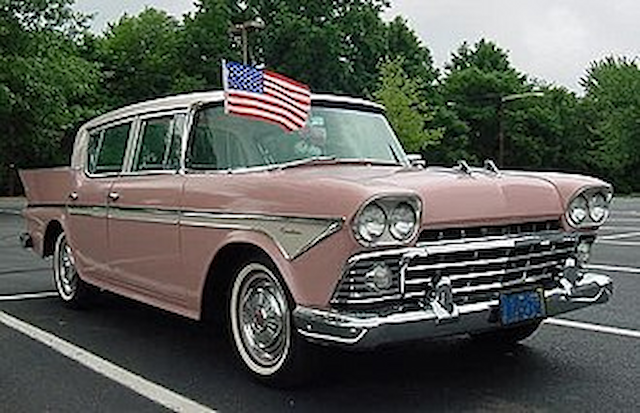
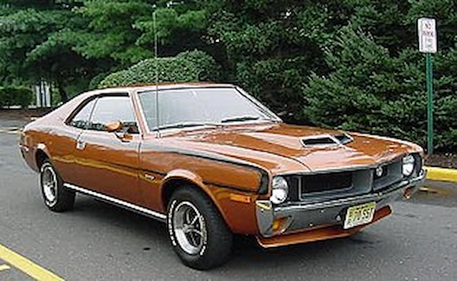
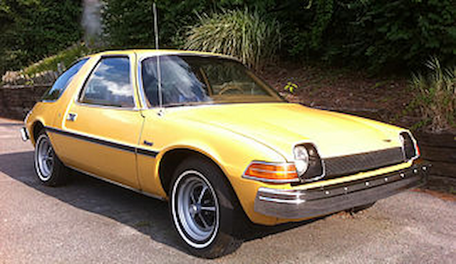
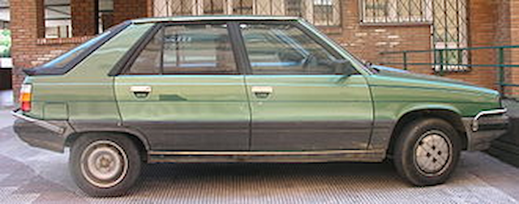
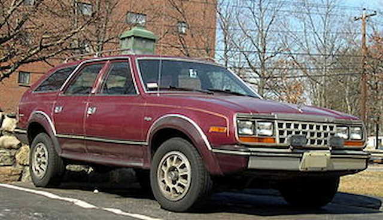

Embedded Static Google Map using iFrame:
When creating websites, it is very important that we can tailor the use of the website to the client’s needs to make it efficient for the user and therefore do our job correctly. For example, when creating a website for a brick and mortar business or organization that clients may, at some point, need to drive to physically, we need to wonder what we could add in our website to be helpful to the customer. An obvious answer could be just to add an address, but thanks to iFrames, we can make this a lot more helpful for customers. An iFrame, short for an inline frame, is a HTML element which has the ability to add in another HTML element, such as a map or video, inside of a webpage. An important thing to remember about iFrames though, is that they are a part of the content of your site, but of course, they are not a part of the site itself. This is because iFrames are used to embed some content into a website which is not created from the website in it of itself, which of course can be sometimes a security risk if you link the iFrame from a dangerous site, however it often does not have any security risk for readers on your website only, it will be only a matter of security if a user leaves your website and goes onto the source of the content.
Now that we understand what iFrames are, we can now begin to explain on how to couple this with using Google Maps. Google Maps is a very useful tool for people to move place to place without using any other form of GPS or map and can even give you a street view of some roads that you may drive on.
The way to couple iFrames with Google Maps is simpler than it seems, at least to me. All you have to do is go onto google maps on your browser, and once it loads enter the location of where you want the map to be on your webpage, and click on the search icon.

Then, click on the share button, which should be located just below the address bar. You will then see an option to “Embed a Map”, click on that, then click “COPY HTML”. You will now move onto VSCode, and find your HTML document. Make sure your HTML document is appropriately styled to fit in this google map image, stylistically and practically.

Create a section and a h2, and maybe a paragraph or list item. It is a good idea to have a h2 or some sort of header above where you want to put the iFrame of the map, which will state a general explanation of what the map is of, such as “Where we are” or, “Our Location”. It is then a good idea to link the section to the navbar, and have that h2 be the exact same as stated in the navbar.
Below, it is a good idea to have a paragraph, list item, or maybe even perhaps a figcaption, which will state in specifics where the place is, such as an address, which will add redundancy when google maps inevitably has faulty code.

Click to See Example
Random Article about The History of AMC!:
American Motors Corporation, or AMC, was an American automotive company in the late 20th century that was the fourth option for many American consumers for an automobile. Despite being sidelined by their larger competitors, GM, Ford and Chrysler, AMC did make a mark on the automotive landscape. However, it often came at a large cost as AMC rarely had money to spare.
In 1954, the economy was booming after World War Two, however it was clear that the automotive market share was going to be taken up by larger and larger companies. Companies who didn’t have the size and capital to keep up with new trends and to sell their product were not going to keep up and were going to die. Nash-Kelvinator Corporation and Hudson Motor Car Company saw this and decided that they needed to act quickly to save both of their companies. They decided to agree on a merger on May 1st , 1954, and at that time it was the largest corporate merger in history.

After that, the CEO at the time, George Romney, father of failed presidential candidate Mitt Romney, set to work on reviving both companies to keep them competitive in the hot 1950s automotive market. He first tried to consolidate the Nash and Hudson design’s, as to make them easier and cheaper to manufacture, however it is a dangerous game as consumers will know if two products are similar enough to eachother, and will not sell as well. The Hudson Hornet and Wasp and their Nash counterparts were good examples of this, however because they were much larger vehicles, they also had to compete with fierce and innovative large automotive designs with companies with more capital for investment, so it was tough to make a better product in the eyes of consumers.

Because of this, in 1956, George Romney decided to focus on smaller vehicles such as the Rambler line, as they would compliment the automotive market which was largely centered around larger vehicles, which larger companies could sell better and out compete them with. This is where, for a moment, AMC found their early success. The success still wasn’t enough, as in 1956 their sales declined once again, however despite this their Rambler line was doing better than their larger offerings. In 1957, George Romney decided to go on a PR campaign himself to “get the word out” about the Rambler, as he was confident his niche product would sell quite well, and in 1958, because of this, AMC finally found profitability. It was then decided after this to discontinue Nash and Hudson and focus solely on the Rambler line, which later became the AMC everyone knew of the 1960s, 1970s, and 1980s.
In the 1960s, Romney’s decision to focus on the small Rambler was paying the company back in droves, as it became the 3rd bestselling vehicle in America in the early 1960s as its small quirky character became a fad of sorts. Right after the company became debt free, Romney ran for governor of Michigan in 1962. His replacement was Roy Abernethy, who was a successful sale executive. Roy Abernethy did not like the reliance of the Rambler product, and in the late 1960s began to transition away from the focus on small, economical cars. He wanted to offer more luxury and performance products and believed the emphasis on the Rambler was hurting the company as a whole because it deemphasized the other vehicles in their lineup. This legitimately helped them though when the muscle car boom happened in the late 60s, and they were able to release the AMX and the Javelin to compete with the mustang and chargers.

The 1970s was a very turbulent decade for AMC, and it is probably the decade most remember of AMC for their quirky and original products. They had just recently bought Jeep from Kaiser-Jeep, which just like small cars, they had no competition in at the time as the big three didn’t offer much competition in the segment. This also came with a military market, which AMC reworked into AM General. They also updated their small offerings in 1970, offering the AMC hornet and gremlin, two quirky small cars that many boomers remember of AMC. The Hornet actually became the bestselling vehicle for AMC behind the previous Rambler, with the Gremlin not far behind. Along with the quirky designs came quirky upholstery, and for a time both of those vehicles were able to be ordered with Levi Denim interiors. They also focused on larger vehicles aswell, such as the Matador and Ambassador, which was right at home on 1970s roads however because of the many fuel crises in the 1970s, didn’t sell as well as their smaller vehicles. This fuel crisis caused AMC to develop a new revolutionary vehicle, the AMC pacer. This is one of the most famous vehicles AMC ever made, and actually did sell well for a short time, but it was a massive investment for them and it cost them.

The late 70s was a hard time for AMC, despite them doing okay because of their emphasis on smaller vehicles during an oil embargo. Their Pacer sales, surprisingly, did not match expectations to investors, despite their Jeep and AM General brands doing remarkably well at the time. In 1977, the GSA(General Reserves Administration), a part of the federal government, gave AMC a contract worth 15 million dollars to save the company. Despite this, more drastic measures had to be taken and in 1978 AMC called on French automotive company Renault, into a merger. This seemed to have helped AMC with finance, however, because AM General sold military equipment to the US government, it meant that AMC, as a French subsidiary, could no longer own AM General, one of their more profitable brands.

In 1980, AMC began producing new revolutionary products to try to get their company out of a hole. They produced a 4WD variant of their sedan, the spirit and the concord, call the AMC eagle, which looked like a sedan but had Jeep underpinnings. They were also investing in the Jeep brand, updating their truck line, and investing in a new SUV called the Cherokee, and began to design a new vehicle to replace their Grand Wagoneer, called the Grand Cherokee. Along with this, they began importing and assembling French Renaults, however they were not selling as well as previously hoped. In France though, Renault was having a lot of trouble. Despite this though, Renaults new president, Georges Besse, was championing AMC and wanted them to succeed, however in a sick turn of events he got assassinated in 1986.

At this point in the late 1980s, Chrysler was looking into buying AMC for their Jeep brand, and due to AMC’s bad circumstances Chrysler CEO Lee Iacocca was able to arrange a deal to buy the company. He only wanted to buy the company for the Jeep brand, however, for a few more years they continued the Eagle nameplate on rebadged Mitsubishis. AMC’s legacy lives on today at quirky car meets, and the closest descendants to AMC’s that you can drive today are modern Jeeps.